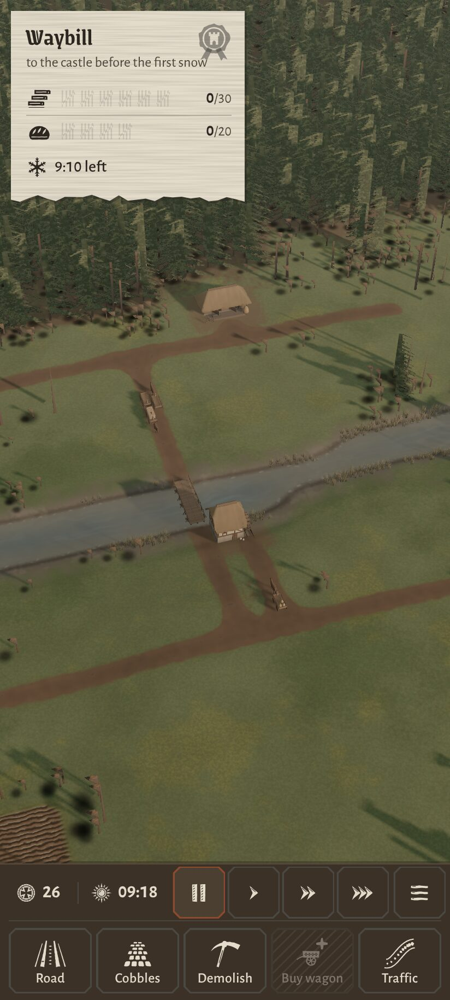

<!doctype html>
<html lang="pl"><head><meta charset="utf-8"><title>Macierz paleta x styl</title>
<script src="palettes.js"></script>
<style>
@font-face { font-family: 'Grenze Gotisch'; font-weight: 700; src: url(../../../node_modules/@fontsource/grenze-gotisch/files/grenze-gotisch-latin-700-normal.woff2) format('woff2'); unicode-range: U+0000-00FF, U+2000-206F; }
@font-face { font-family: 'Grenze Gotisch'; font-weight: 700; src: url(../../../node_modules/@fontsource/grenze-gotisch/files/grenze-gotisch-latin-ext-700-normal.woff2) format('woff2'); unicode-range: U+0100-02BA, U+1E00-1E9F; }
@font-face { font-family: 'Alegreya Sans'; font-weight: 500; src: url(../../../node_modules/@fontsource/alegreya-sans/files/alegreya-sans-latin-500-normal.woff2) format('woff2'); unicode-range: U+0000-00FF, U+2000-206F; }
@font-face { font-family: 'Alegreya Sans'; font-weight: 500; src: url(../../../node_modules/@fontsource/alegreya-sans/files/alegreya-sans-latin-ext-500-normal.woff2) format('woff2'); unicode-range: U+0100-02BA, U+1E00-1E9F; }
* { margin: 0; padding: 0; box-sizing: border-box; }
body { background: #e9e3d4; color: #1b1611; font: 500 17px 'Alegreya Sans'; padding: 24px; width: max-content; }
.g { display: grid; grid-template-columns: 150px repeat(3, 300px) 36px 300px; gap: 14px 14px; align-items: start; }
h2 { font: 700 26px 'Grenze Gotisch'; line-height: 1; }
.ch { font: 700 21px 'Grenze Gotisch'; border-bottom: 1.5px solid #1b1611; padding-bottom: 4px; }
.ch small, .rh small { display: block; font: 500 14px 'Alegreya Sans'; color: #4d4335; margin-top: 3px; }
.rh { font: 700 21px 'Grenze Gotisch'; border-top: 1.5px solid #1b1611; padding-top: 6px; align-self: stretch; }
.rh i { display: block; width: 100%; height: 14px; margin-top: 10px; }
img { width: 300px; height: 666px; display: block; outline: 1px solid #1b1611; }
.bf { }
.bf p { font: 500 14px 'Alegreya Sans'; color: #4d4335; margin-top: 6px; }
</style></head><body>
<div class="g" id="g"></div>
<script>
const S = { S1: ['S1 · Płaski, ostry, heraldyczny', 'czyste płaszczyzny, cienkie linie, duże cyfry'], S2: ['S2 · Rękopis z ornamentem', 'inicjał, narożniki, rubryki'], S3: ['S3 · Materiałowy', 'kuta rama, nity, przeszycie'] };
let h = `<h2>Paleta \\ styl</h2>` + Object.values(S).map(([a, b]) => `<div class="ch">${a}<small>${b}</small></div>`).join('') + `<div></div><div class="ch">Obecny HUD<small>odniesienie, stan sprzed zmian</small></div>`;
let r = 0;
for (const [k, p] of Object.entries(PALETTES)) {
  r++;
  h += `<div class="rh" style="grid-row:${r + 1};grid-column:1">${k}<small>${p.name}</small><i style="background:linear-gradient(90deg,${p.panel} 0 40%,${p.edge} 40% 55%,${p.text} 55% 70%,${p.num} 70% 85%,${p.alert} 85%)"></i></div>`;
  h += ['S1', 'S2', 'S3'].map((s, i) => ``).join('');
  if (r === 1) h += `<div class="bf" style="grid-row:2;grid-column:6"><p>Ten sam widok mapy w obecnym HUD-zie (zrzut z innej chwili gry, stąd inne liczby).</p></div>`;
}
document.getElementById('g').innerHTML = h;
Promise.all([...document.images].map((i) => i.decode())).then(() => document.fonts.ready).then(() => { document.body.dataset.ready = 1; });
</script></body></html>
